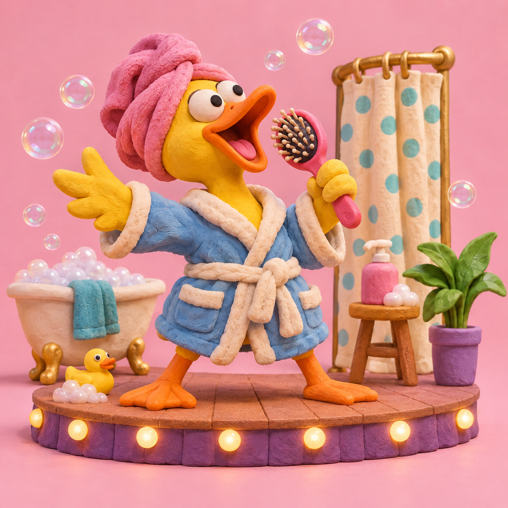
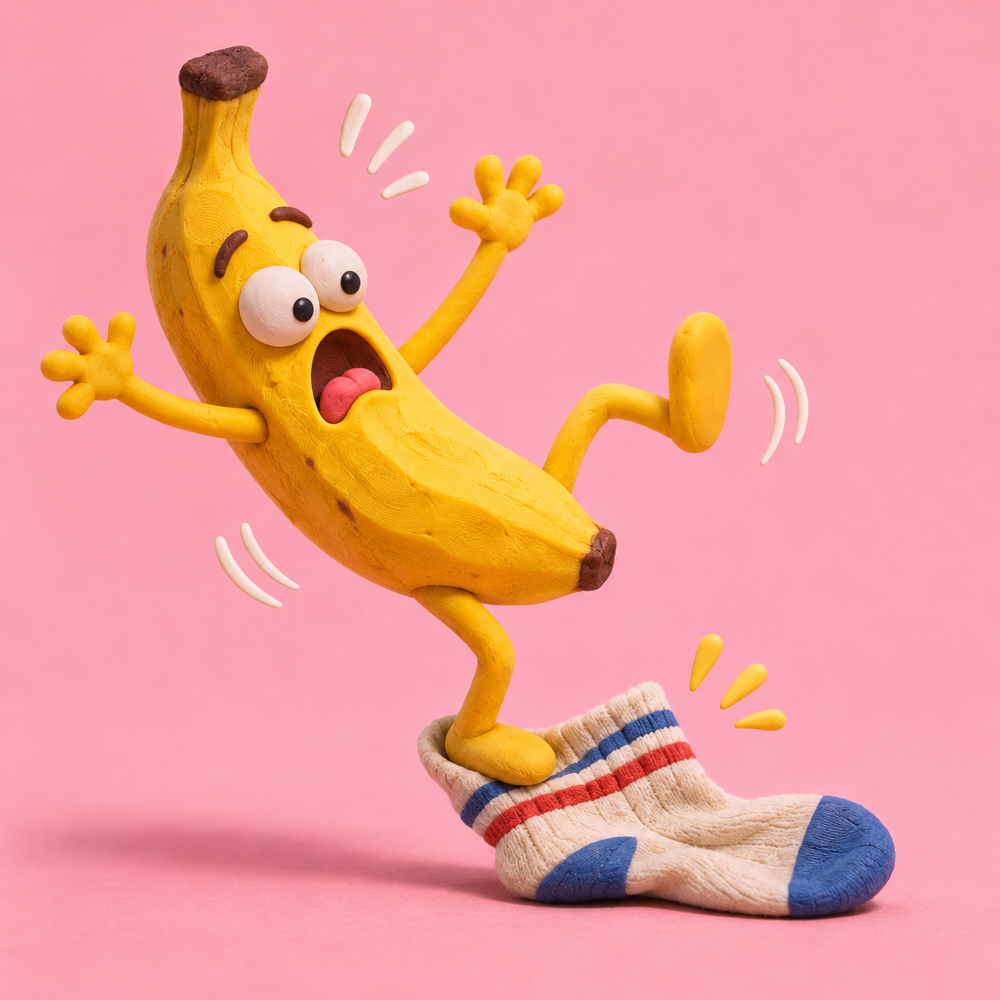
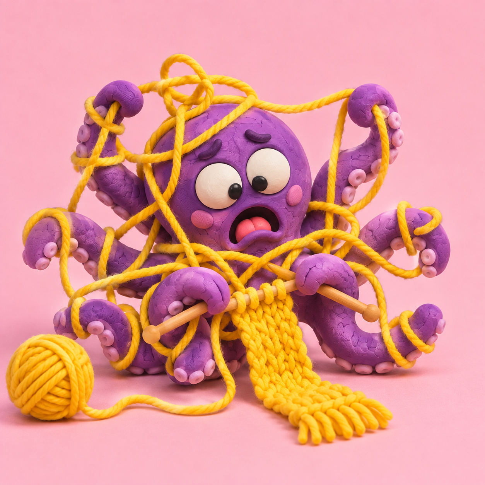
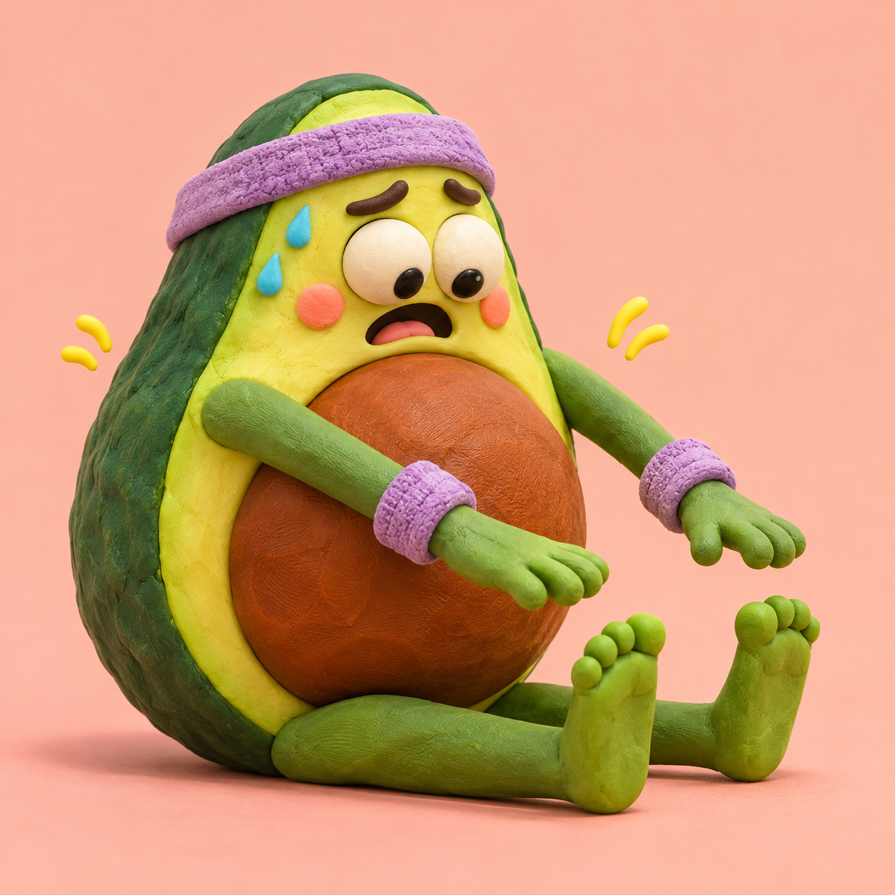
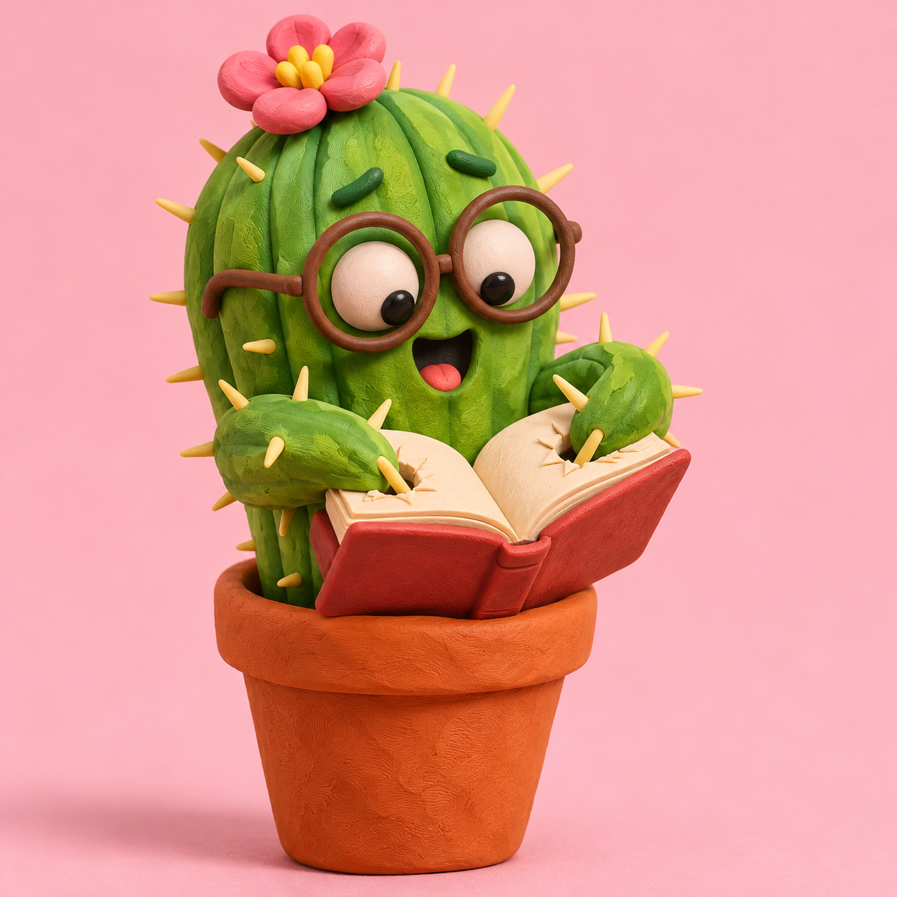
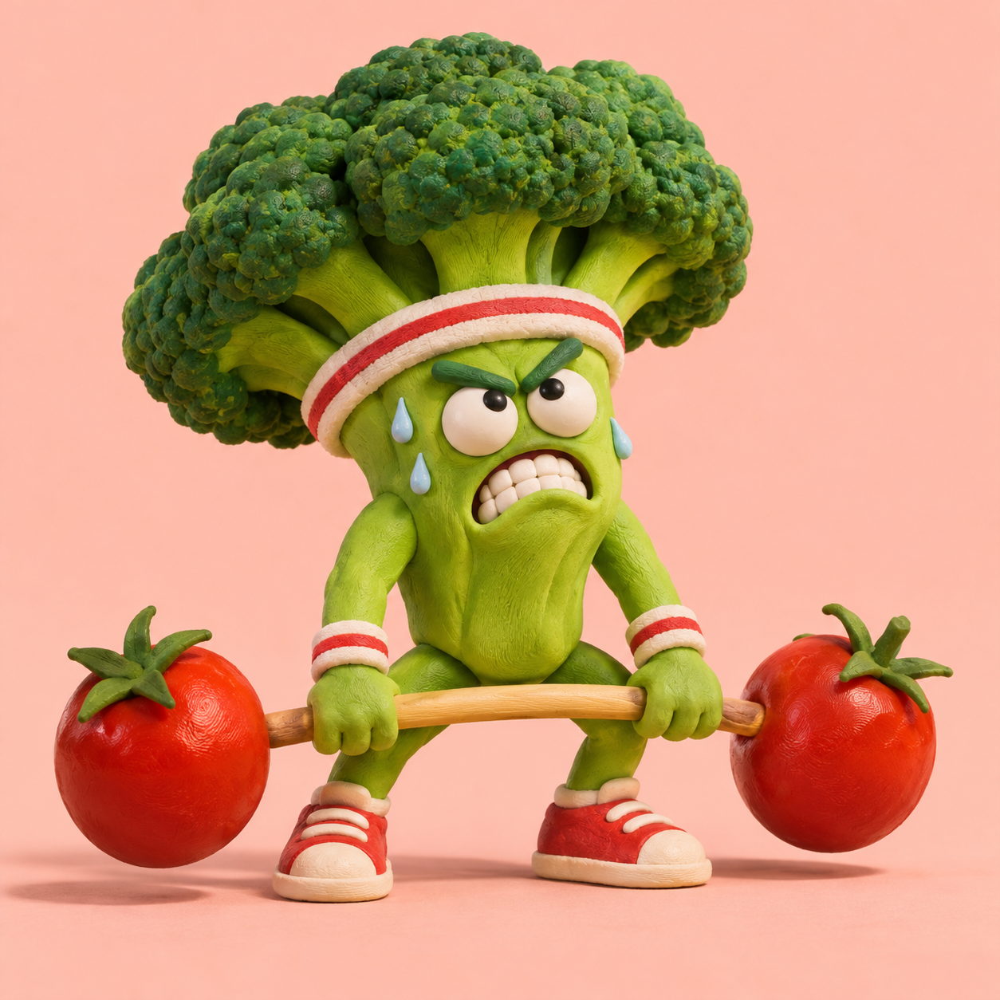
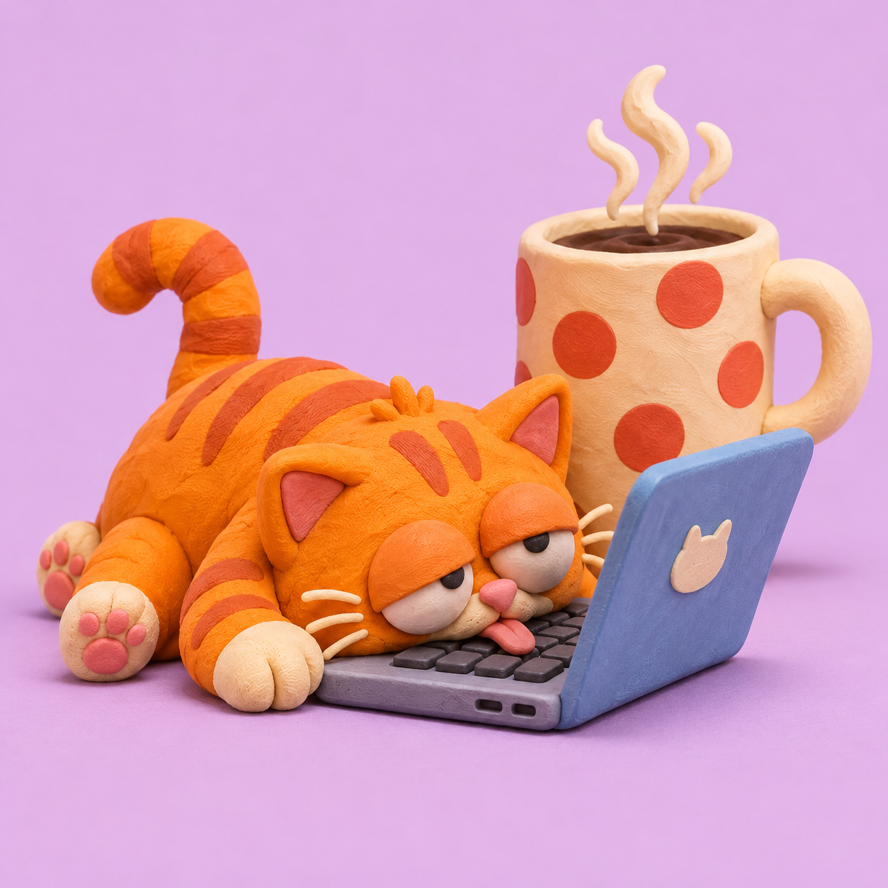
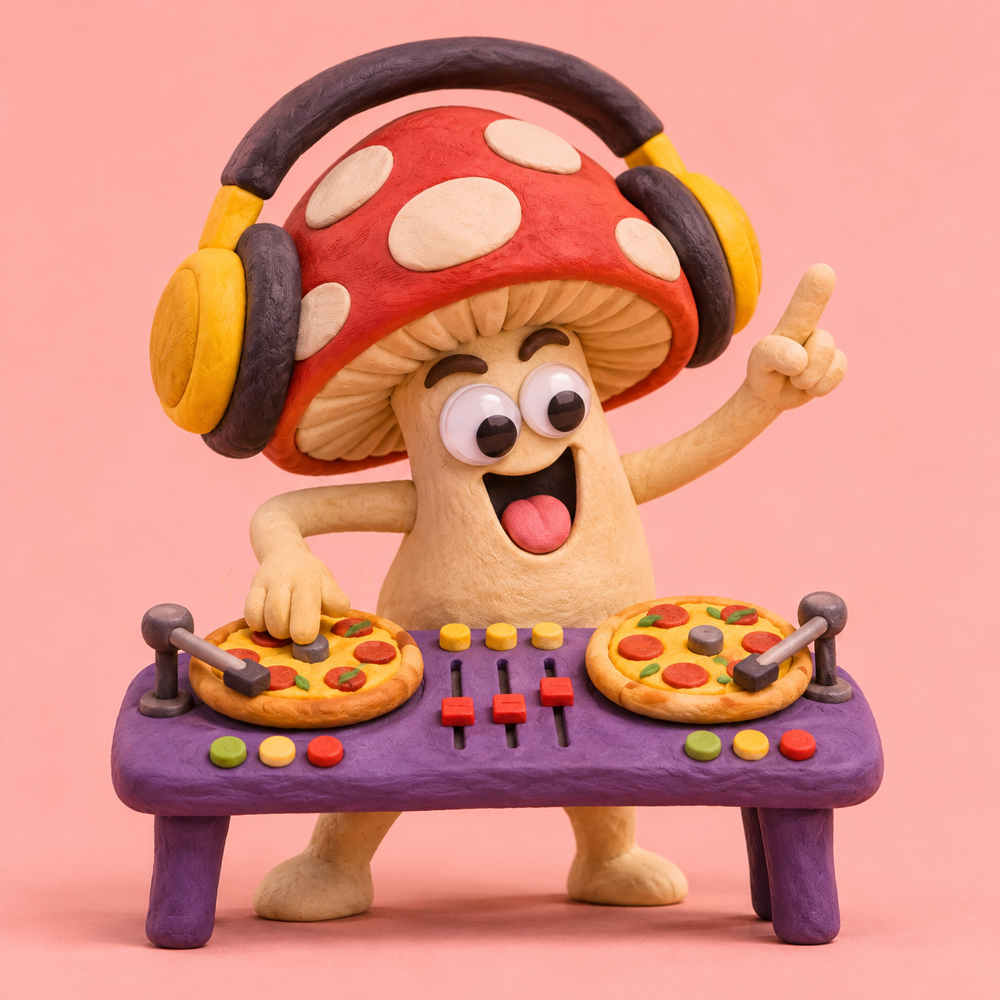
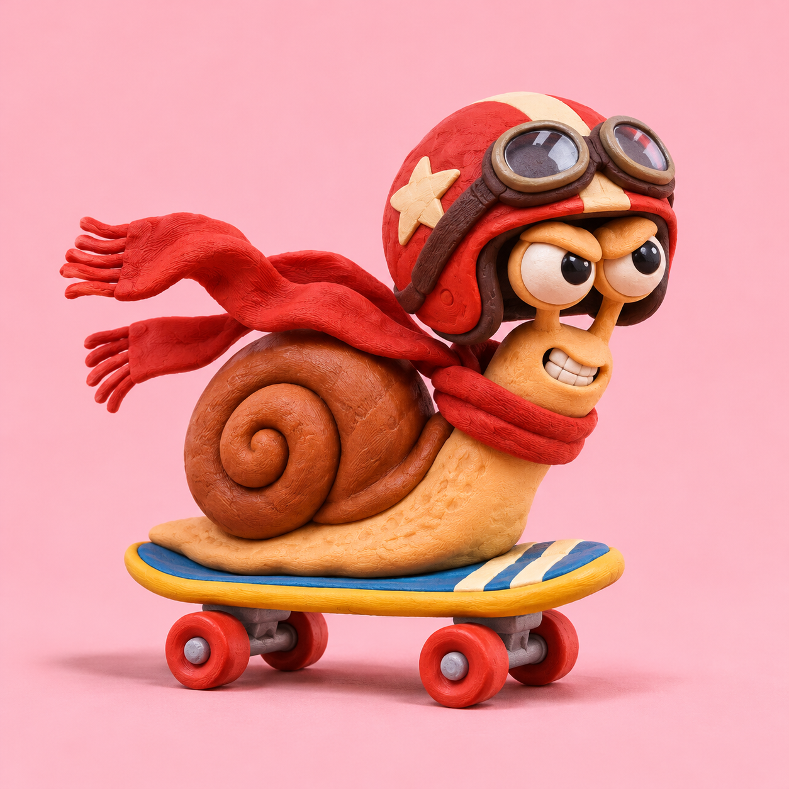
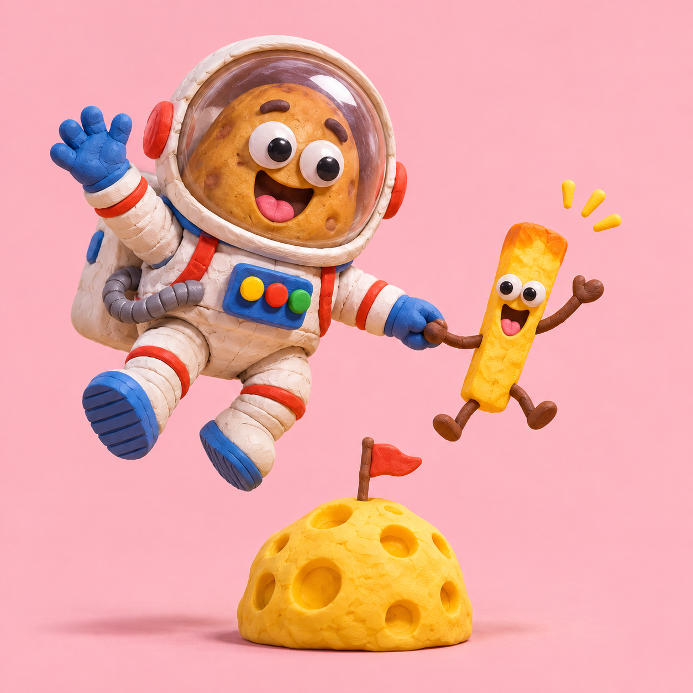

#1 Sahne Işığı

Banyo Tenoru Vak-Vak
Duştan yeni çıktı, saç fırçasını mikrofon yaptı ve banyo akustiğinde tüm mahalleye konser veriyor. Eurovision jürisi kapıda bekliyor!
Hayat bazen fazla ciddi, ama oyun hamurları asla değil! Rengarenk yoğrulmuş, birbirinden sevimli ve biraz da çılgın 10 orijinal karakterle tanışmaya hazır mısın?
Görsellerin tamamını görmek ve hikayelerine yakından bakmak için dilediğin karta tıkla!

Duştan yeni çıktı, saç fırçasını mikrofon yaptı ve banyo akustiğinde tüm mahalleye konser veriyor. Eurovision jürisi kapıda bekliyor!

Yün çorabın içinde ev salonunda artistik buz pateni yapıyor. Kendi kabuğuna basıp düşmeyen tek ve rakipsiz meyve!

Bir yumak sarı iplikle kazak örmeye niyetlendi, 8 koluyla kendini hediye paketi gibi bağladı. Kurtarma ekibi çay molasında!

Çekirdek göbeğini gururla taşıyor, 'İçindeki güvenci ve çekirdeği bul' diyerek lotus pozisyonunda nefes alıyor. Tam bir sağlıklı yaşam gurusu.

Bilgiye o kadar aç ki, ansiklopediyi okumakla yetinmeyip bizzat içinden geçti. Dikenlerinin arasından felsefi fikirler fışkırıyor!

İki kiraz domatesten halter yaptı, sebze liginin en kaslısı olmak için basıyor! Ağır antrenman sonrası mayonez sosunu reddetti.

Kendinden 3 kat büyük kahve fincanına kurulup derin uykuya daldı. 'Önce beş dakika kestireyim, sonra kahvemi içerim' kafasında.

Margarita pizza dilimlerini pikap yaptı, nefis hamur beat'leri çalıyor. Scratch atarken peynir uzuyor ama parti hiç durmuyor!

Kaskını taktı, kaykayının üzerine atladı. Saatte 0.05 km hızla rüzgarı arkasına alıp tozu dumana katıyor, virajlarda drift çekiyor!

Gravyer peynirinden kraterlere ilk adımı attı. Telsizden uzay üssüne anons geçti: 'Bir patates için küçük, sebzelik için dev bir adım!'
Hamur Kafalar, günlük hayatın koşuşturmacasından, resmi e-postalardan ve yetişkin ciddiyetinden bir anlığına uzaklaşmak isteyen herkes için tasarlandı.
Buradaki her bir figür, oyun hamurunun çocuksu neşesini ve sınırsız hayal gücünü yansıtıyor. Kendinizi bir gün banyoda şarkı söyleyen bornozlu bir ördek gibi, başka bir gün ise gravitasyona meydan okuyan bir patates astronot gibi hissedebilirsiniz. Bizce ikisi de harika!
Yapay ciddiyet içermez, tamamen saf neşe!
Pizzadan pikap, domatesten halter olur mu? Bizde olur!
Her baktığınızda yüzünüzde tebessüm bırakır.